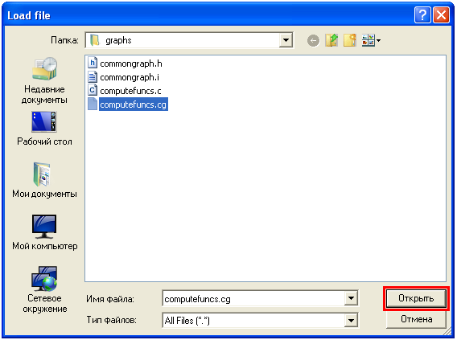

Contents
What is QSAGUI?
Getting started
Create call graph
Link call graphs
Clean call graph
Update call graph
Get funs/files lists
Show call graph
Settings
|
Show call graph
To load call graph use "Call graph" -> "Open..." or "Open" button on tool bar or "Ctrl+O".
Select call graph for loading:

You can select one or more call graphs. If you choose several call graphs they are linked in the one call graph (see path to save in "Application output", change it in settings if needed). On the left of window you'll see lists of functions and files on tabs.
To see call graph use "Call graph" -> "Show as...". Select the output format. Note that if you choose "SVG" format you should have Graphviz package is installed.
You can work with tabs, print and save documents (see "File" menu), enable "full screen" mode and show/hide windows (see "View" menu), use search, clean window and terminate processes (see "Edit" menu).
.
|